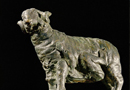

Principle Adventures in Odysseus' Journey
1) Cicones
The first stop on Odysseus journey from Troy is the Thracian city of Ismarus, where the Cicones live. They sack the city, but spare the life of Maron, the priest of Apollo, who gives them twelve jars of wine. These jars become significant later in the journey.
2) Lotus Eaters
The magical part of their journey begins after they leave the Cicones behind. A storm drives them off course to northern Africa, the land of the Lotus Eaters. Whoever eats the fruit of the of the lotus forgot everything and wanted only to stay. With great difficulty, Odysseus gets his men away.
3) Polyphemus
Polyphemus is the proper name of the one-eyed character often referred to as the Cyclops (the Cyclopes are in fact a race of giant humanoids, of which Polyphemus is just one). Polyphemus attacks Odysseus and his men and traps them in his cave. When trapped in the cave, the entrance of which is covered with a huge stone, Odysseus’ companions are eaten – Polyphemus eats two when he first traps them, then two more for breakfast, and then two more when he returns the second night. Odysseus uses the wine of Maron to get Polyphemus drunk and plays a trick upon him by telling him that his name is ‘Nobody’. In return for the wine, Polyphemus promises to eat him last. But when Polyphemus gets drunk, Odysseus sharpens a wooden stake, heats it in the fire and then drives it through the Cyclops’ one eye with the help of his companions. As he cries for help, the other Cyclopes hear him shouting ‘Nobody is killing me’, and pay him no attention. Odysseus sneaks out the next morning hidden under a sheep. The blind Cyclops feels for him, but cannot get him. As he leaves, Odysseus tells him his real name. Polyphemus prays to his father Poseidon that Odysseus should not return. This is the source of his anger at Odysseus. (see images 1-3)
{kind=link}
{kind=link}
{kind=link}
4) Aeolus and his winds.
After leaving the Cyclopes, Odysseus and his crew sail to the floating island of Aeolus, the keeper of the winds. Aeolus gave him a leather bag containing the winds and showed him which one to release to sail home. He did this and reached home. But his crew opened the bag again when Odysseus was asleep, thinking it was gold, and they were blown back to the island of Aeolus.
5) Laestrygonians – ships destroyed and crew killed.
{kind=link}
Odysseus next sails to the land of the Laestrygonians, a savage group who sink all of Odysseus’ ships except for his own and eat the crews. (see image 4)
6) Circe
Circe is a witch connected to the East (she is a descendant of the sun). She first turns Odysseus’ men into pigs, except for Eurylochus who reports what has happened. Odysseus goes to rescue them, and with the help of Hermes resists her magic and then sleeps with Circe without being turned into an animal. This stop provides important information for Odysseus, as it is Circe who sends him to the underworld to see Tiresias. (see images 5-6)
{kind=link}
{kind=link}
7) Journey to the Underworld
We looked in more detail at this visit to the Underworld in Module 13. See the Essential Elements in Module 13 for more information.
8) The Sirens
The Sirens are two (in other authors sometimes more) creatures, either with female form or female heads with bodies of birds. As men passed their island they would lure them in with their beautiful singing which promises to give further knowledge, and then kill them once they approached. Odysseus passed them without harm by putting wax in his companions ears and having them bind him to the mast so that he could hear the Sirens without swimming to them.
9) Charybdis and Scylla
Odysseus’ ship must then pass by the wandering rocks. Odysseus avoids them by sailing close to two high cliffs. In the lower cliff lived the Charybdis, who three times a day sucked in all the water from the straight and spits it out. He sailed closest to the higher cliff where the Scylla lived. She was originally a sea-nymph but had been changed by a jealous Amphitrite (the wife of Poseidon) into a monster with six dogs heads and twelve feet. She takes six men from Odysseus’ ship, but he passes successfully. (see images 7-8, the latter a comic political take on the myth)
{kind=link}
{kind=link}
10) The Cattle of the Sun (Helios)
Once he has passed by the Scylla, Odysseus goes to the island where the cattle of the Sun (Helios) have their pastures. Circe had told him of this island and warned him not to touch the animals.Odysseus refrained, but his men could not. They kill some cattle and eat them. Zeus thus causes a storm as punishment and the ship is destroyed by a thunderbolt. Odysseus alone survives floating on part of the mast. He drifts across the sea to the island of Calypso. where he lives for seven years. (see image 9)
{kind=link}